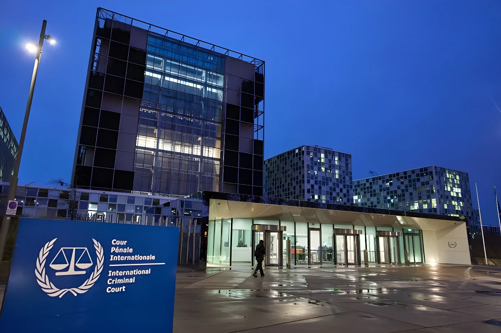

Le 9 octobre 2026, le secrétaire d'État américain Marco Rubio a annoncé des sanctions contre la Cour pénale internationale elle-même, et non plus seulement contre ses responsables : gel de ses biens aux États-Unis, interdiction de lui fournir fonds, biens ou services, et six mois pour que les entreprises américaines coupent leurs liens avec elle. La Cour y voit une attaque contre l'État de droit ; l'Union européenne et huit États alliés regrettent la décision, et Israël l'a saluée. Les Pays-Bas ont demandé à Bruxelles de préparer le statut de blocage, qu'ils appellent « l'option nucléaire ».
Le vendredi 9 octobre 2026, le secrétaire d'État américain Marco Rubio a annoncé, dans un message vidéo préenregistré, des sanctions contre la Cour pénale internationale (CPI) en tant qu'institution. Jusqu'ici, Washington visait des responsables de la Cour, des juges, des procureurs et des organisations qui la soutiennent ; cette fois, c'est la juridiction elle-même qui est frappée. Les sanctions bloquent les biens que la Cour détient aux États-Unis, interdisent de lui fournir des fonds, des biens ou des services, et donnent six mois aux entreprises et personnes américaines qui travaillent avec elle pour cesser leurs relations. Le département d'État a prévu des exemptions temporaires pour la maintenance, la technologie et les régimes de retraite, afin de laisser du temps aux États pour montrer des progrès sur les préoccupations américaines.
Rubio a justifié la mesure par une phrase sans détour : « Les États-Unis et le peuple américain ne sont pas soumis à la juridiction de cette fausse CPI. » Il a ajouté : « Soit la CPI mettra fin à ses menaces, soit nous mettrons fin à la CPI. »
L'administration invoque l'enquête de la Cour en Afghanistan, qui pourrait viser du personnel américain, et les mandats d'arrêt émis contre le Premier ministre israélien Benyamin Nétanyahou et l'ancien ministre de la Défense Yoav Gallant à propos de Gaza. Les États-Unis et Israël ne sont pas parties au Statut de Rome, le traité de 1998 qui a créé la Cour, et la Cour n'a poursuivi aucun ressortissant américain à ce jour. Une loi américaine de 2002 interdit d'ailleurs d'extrader des citoyens américains vers La Haye. Rubio demande aux alliés de s'associer aux sanctions, faute de quoi Washington poursuivra sa campagne « pour démanteler la CPI, morceau par morceau, jusqu'à ce que les Américains ne soient plus menacés ».
Le calendrier a frappé les esprits : l'annonce est tombée quelques heures après que l'ancienne juge de la CPI Navi Pillay a reçu le prix Nobel de la paix, comme nous l'avons raconté. La décision aurait toutefois été prise avant la remise du prix.
| Cibles des sanctions américaines | Nombre |
|---|---|
| La Cour en tant qu'institution | Octobre 2026 |
| Juges de la Cour | 9 |
| Organisations palestiniennes de défense des droits | 3 |
| Rapporteur spécial de l'ONU | 1 |
| Procureurs de la Cour | Plusieurs |
Selon Human Rights Watch, les personnes déjà sanctionnées voient leurs comptes gelés, leurs transactions rejetées, leurs services numériques refusés et leur entrée aux États-Unis interdite. Appliquées à la Cour, ces mesures la coupent des services financiers américains, des entreprises technologiques américaines et même du dollar. Des sociétés non américaines pourraient cesser de travailler avec elle pour ne pas perdre leur accès au système bancaire des États-Unis, ce qui menace ses banques, sa technologie et ses déplacements. La Cour mène des enquêtes dans 17 situations.
Rubio annonce les sanctions contre la CPI ; Navi Pillay reçoit le Nobel de la paix.
Human Rights Watch et trois autres organisations saisissent la justice fédérale américaine contre le régime de sanctions.
Le Tchad et le Venezuela engagent leur retrait de la Cour.
Mandats d'arrêt contre Benyamin Nétanyahou et Yoav Gallant.
Mandat d'arrêt contre Vladimir Poutine.
Entrée en vigueur du Statut de Rome ; la Cour siège à La Haye.
La Cour a condamné les sanctions comme une atteinte à l'État de droit. Sa présidente, Tomoko Akane, a affirmé qu'elle continuerait à remplir son mandat de manière indépendante et impartiale, et elle a appelé les États membres à la soutenir. La procureure adjointe, Nazhat Shameem Khan, a déclaré que les mesures « doivent être condamnées ». Pour Amnesty International, Erika Guevara Rosas parle d'une « attaque existentielle » qui « doit échouer ». Human Rights Watch y voit une tentative de « détruire la CPI pour protéger des responsables américains et israéliens ».
« Les États-Unis et le peuple américain ne sont pas soumis à la juridiction de cette fausse CPI. »
— Marco Rubio, secrétaire d'État américain, 9 octobre 2026 (traduction)Le Canada, le Danemark, l'Allemagne, la France, l'Italie, le Japon, les Pays-Bas et le Royaume-Uni ont publié une déclaration commune disant « regretter et désapprouver fermement » l'annonce. Le porte-parole du secrétaire général de l'ONU a parlé d'« un coup sérieux » porté à la poursuite collective de la justice pénale internationale. L'Union européenne juge la décision « profondément regrettable » et se dit « prête à prendre toutes les mesures nécessaires » pour permettre à la Cour de travailler ; la Commission espère que le délai de six mois laisse place au dialogue.
| Acteur | Réaction |
|---|---|
| Union européenne | « Profondément regrettable » |
| Huit États alliés | Déclaration commune de désaccord |
| ONU | « Coup sérieux » à la justice pénale |
| Israël (Nétanyahou) | Salue et remercie Washington |
Le principal contre-feu européen en discussion est le statut de blocage, un règlement de 1996 qui interdit aux opérateurs européens de se conformer à des sanctions extraterritoriales. Le ministre néerlandais des Affaires étrangères, Tom Berendsen, le qualifie d'« option nucléaire », tout en précisant que son pays, qui accueille la Cour, a demandé à Bruxelles de le préparer pour pouvoir l'activer vite. Human Rights Watch appelle l'Union à l'activer immédiatement. Les sources consultées ne disent pas si une décision a été prise.
Human Rights Watch et trois autres organisations ont saisi le 11 août 2026 un tribunal fédéral américain pour faire annuler le régime de sanctions visant la CPI ; de nombreux experts et anciens responsables ont déposé des mémoires en soutien. Pour HRW, ces sanctions s'inscrivent dans une série de retraits américains, de l'Accord de Paris sur le climat, de l'Organisation mondiale de la santé et du Conseil des droits de l'homme de l'ONU.
Les sanctions s'ajoutent à des retraits d'États. Le Venezuela et le Tchad ont engagé le leur cette année, après le Burkina Faso, le Mali et le Niger, et Nauru a annoncé qu'il quitterait à son tour la Cour. Netanyahou a salué les sanctions en remerciant l'administration pour son « leadership ».
En sanctionnant la Cour en tant que telle, Washington déplace le terrain : il ne s'agit plus de contester une décision, mais de priver un tribunal des moyens de fonctionner, de payer ses fournisseurs et d'utiliser les outils numériques et financiers qui reposent sur le dollar. La force du dollar devient ainsi une arme contre une institution de droit.
La riposte appartient maintenant aux États parties, qui disposent de six mois et d'un outil juridique, le statut de blocage. S'ils l'activent, l'Europe protégerait la Cour au risque d'un conflit commercial avec les États-Unis ; s'ils s'abstiennent, le message sera que la justice internationale ne survit que si les grandes puissances la tolèrent.